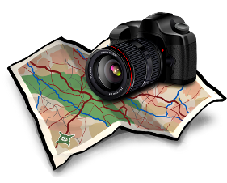

A ScanLocs egy kis parancssoros programocska, mely megvizsgál egy mappastruktúrát, TAG-fájlok után kutakodva, melyekből kinyeri a GPS adatokat. Ezek a TAG fájlok egyszerű szöveges fájlok, melyek a képeket tartalmazó mappákban vannak, jelezvén, hogy a mappa milyen helyekről tartalmaz fotókat. A szkennelési folyamat után egy egyszerű html lap megnyitásával a böngészőben megjeleníthetjük az általunk készített fotók helyeit tartalmazó google térképet. A térképen elhelyezett kis ikonokra kattintva azonnal elérhetőek a számítógépen tárolt mappák, és böngészhető a tartalmuk.
Egy fotókat tartalmazó mappa megjelölése egy helyszínnel rendkívül könnyű. Csak létre kell hozni benne egy "location.info" fájlt a megfelelő tartalommal. (alább részletezve)
Természetesen egy fájlba több helyszínt is rögzíthetünk. (Mivel egy utazás alatt több helyszínen is készülhettek fotók)
Ha több mint egy mappa hivatkozik ugyanarra (vagy közel ugyanarra) a helyre, a program összeolvasztva egy helyen jeleníti meg a mappák tartalmát dátum szerint növekvő sorrendben.
Használat: Csak klikkeljünk a 0_index.html fájlra, és egy böngésző fog felugrani mutatva az általünk fotózott helyszíneket a google térképén.
Használatához működő internet kapcsolat szükséges!
ScanLocs |

|

|
ScanLocs mappastruktúra GPS koordináta szkenner (C++)
Szeretek utazgatni és az utazásaim alatt fotókat készíteni. Az utóbbi pár évben sok gigabájtnyi kép gyűlt össze a számítógépemen, melyeket különböző mappákban tartok szétválogatva dátum illetve utazás szerint. Így ha dátum alapján szeretnék keresni egy utazást akkor könnyen megtalálom, de ha egy bizonyos városról vagy helyről készült fotót szeretnék keresni akkor már problémásabb a dolog. Úgy döntöttem, hogy írok egy kis programocskát, mely segít ezen a dolgon.A ScanLocs egy kis parancssoros programocska, mely megvizsgál egy mappastruktúrát, TAG-fájlok után kutakodva, melyekből kinyeri a GPS adatokat. Ezek a TAG fájlok egyszerű szöveges fájlok, melyek a képeket tartalmazó mappákban vannak, jelezvén, hogy a mappa milyen helyekről tartalmaz fotókat. A szkennelési folyamat után egy egyszerű html lap megnyitásával a böngészőben megjeleníthetjük az általunk készített fotók helyeit tartalmazó google térképet. A térképen elhelyezett kis ikonokra kattintva azonnal elérhetőek a számítógépen tárolt mappák, és böngészhető a tartalmuk.
Egy fotókat tartalmazó mappa megjelölése egy helyszínnel rendkívül könnyű. Csak létre kell hozni benne egy "location.info" fájlt a megfelelő tartalommal. (alább részletezve)
Természetesen egy fájlba több helyszínt is rögzíthetünk. (Mivel egy utazás alatt több helyszínen is készülhettek fotók)
Ha több mint egy mappa hivatkozik ugyanarra (vagy közel ugyanarra) a helyre, a program összeolvasztva egy helyen jeleníti meg a mappák tartalmát dátum szerint növekvő sorrendben.
Használat: Csak klikkeljünk a 0_index.html fájlra, és egy böngésző fog felugrani mutatva az általünk fotózott helyszíneket a google térképén.
Használatához működő internet kapcsolat szükséges!
TAG fájlok
A TAG fájlok egyszerű szöveges fájlok, melyek neve "location.info".Minden sor a fájlban egy helyet jelöl a térképen.
A sorok pontosvesszővel elválasztott mezőket tartalmaznak:
| Hely neve; | Fényképezés dátuma; | GPS lat,GPS long; | Opcionálisan: első kép |
Példa TAG fájl:
Frankfurt am Main;2012.05.28;50.112102,8.680744;
Heilderberg;2012.05.29;49.409856,8.687525;DSC_0215.JPG
Hogy deríthetjük ki egy hely GPS koordinátáit...
{kind=link}
{kind=link}
Letöltés
ScanLocs forráskód v0.91 (2012.05.29) Win/Linux/MacWin32 futtatható (angol) Futtatható bináris zip fájlba csomagolva v0.91 (2012.05.29)
| Szerző: | Péter Deák |
| Licensz: | GPL v2 |
| Kapcsolat Email: |  at gmail.com at gmail.com |